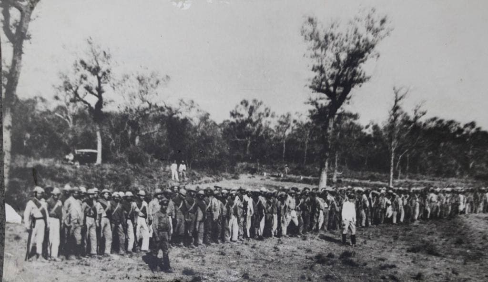

The Coronel Toledo fort was founded on January 21, 1927 by Captain Federico Wesman Smith, Lieutenant Alfredo Ramos, Sergeant Tiburcio Alderete and First Corporal Alfredo Pla.
In peacetime the fort was occupied by a platoon. During the beginning of the Chaco War, the Boquerón and Toledo forts were occupied almost simultaneously by Bolivian troops on July 31, 1931, and later reoccupied by the Paraguayans on January 22, 1933.
February 14, 1933, announcing the future battle of Toledo, Paraguayan vanguard troops clashed in skirmishes with Bolivian advance patrols.
On February 25, a wave of ten planes bombed Toledo, in the bombardment one plane was shot down and the next day, February 26, the battle began, ending on May 12, 1933, with an approximate balance of 1,039 wounded and dead in the Bolivian army and an estimated 241 wounded and dead in the Paraguayan army. (Machuca 1962, Gonzales 1972).
The Battle of Toledo, of the Chaco War, between Bolivia and Paraguay, took place from February 25 to March 11, 1933. The Bolivian army's attack on the strategic Toledo fort was, until the Second Battle of Nanawa, in July 1933, the one that produced the most casualties for the Bolivian army. This battle ended on March 11, 1933 with the Bolivian withdrawal to a defensive line 11-15 km from the Corrales fort and was, until the Second Battle of Nanawa, in July 1933, the most important of the war.
Colonel Ayala was unable to pursue the enemy due to the shortage of trucks and because Colonel Estigarribia decided to use part of his forces as a general reserve due to the surprise appearance of the 9th Bolivian Division in the central area and the subsequent capture that carried out that unit from the Alihuatá (Zenteno) fort on March 13, 1933. "A mistake that Kundt frequently made during the war was not to concentrate his forces in a single and well-planned attack. Instead he ordered successive attacks on separate points from the battlefront. Aside from this strategy, he often drew forces from other fronts, so every attack was carried out without reservation."
As was customary in leading the Bolivian army, General Filiberto Osorio directed the entire operation from his Command Post located in Yayucubás, almost 100 km from the battlefront.